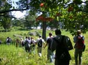
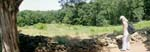
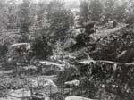
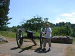
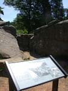
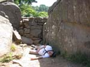

| page 4 of 12 |
| Day Two with Prof. Gary Gallagher 7/27/2001 |
UCLA at Gettysburg Journal |
| page 4 of 12 |
|  |
 |
 |
| The students approach Devil's Den across the triangular field to the west. | Sarah looks back the way we came, over the triangular field and the woods to the west of Devil's Den. | Looking southwest from the west side of Devil's Den toward the Slyder farm. Previous shot would be taken from a point in the middle-distance. |
|  |
 |
 |
| Roy stands at the position of the 4th Battery, New York Light Artillery in Devil's Den. Little Round Top in the background. | Scene of the famous photograph of a dead "Confederate sharpshooter" at Devil's Den. The body was posed by the photographer for dramatic effect. | A highly-trained (and well fed) reenactor is engaged to enact the scene for the students. (Do not try this at home.) |
| Roy looks to be in much better condition than Don... (photo by Roy) | UCLA students admid the rocks of Devil's Den. | Emily & Sarah in Devil's Den. Photo by Roy. |